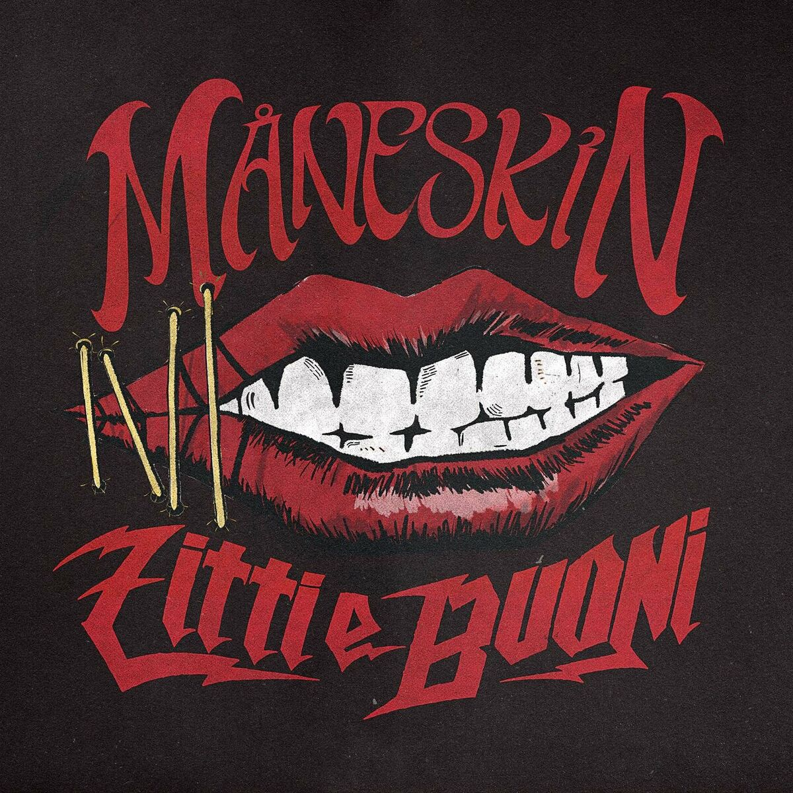

I Måneskin sono una band rock italiana, formatasi nel 2016 a Roma. La band è composta da:
Damiano David – voce.
Victoria De Angelis – basso.
Thomas Raggi – chitarra.
Ethan Torchio – batteria.
I Måneskin combinano rock, glam
e sonorità moderne, creando uno
stile unico e riconoscibile.
Hanno raggiunto la fama internazionale
nel 2021 grazie alla vittoria dell'Eurovision Song Contest con il brano “Zitti e Buoni”.
La loro musica affronta temi di ribellione,
libertà e autoespressione. Canzoni come
“Beggin'”, “I Wanna Be Your Slave” e “Coraline”
sono diventate hit mondiali, conquistando
le classifiche in Europa, America e oltre.
I Måneskin hanno suonato nei più grandi
festival internazionali e sono considerati
una delle band rock più influenti della nuova generazione.